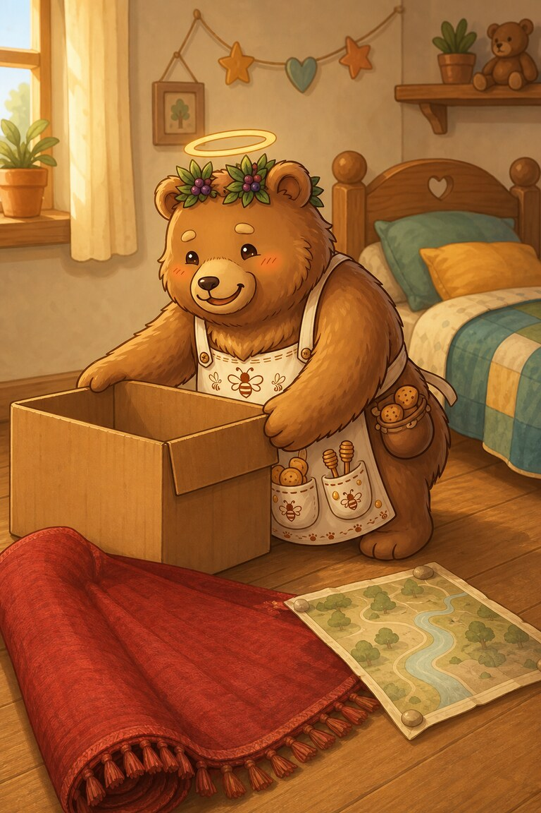
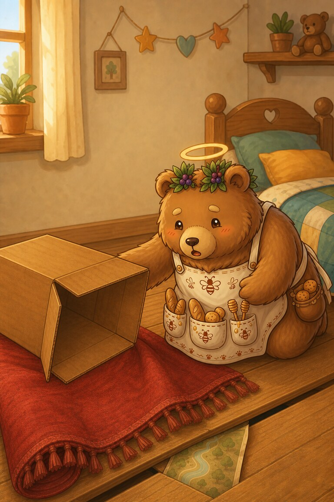
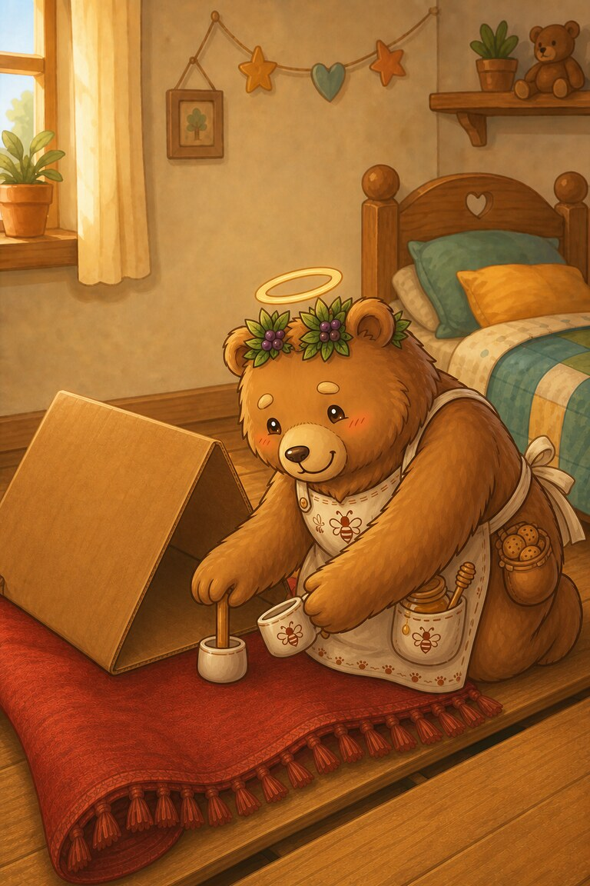
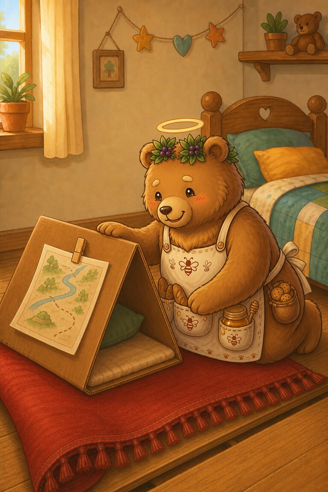
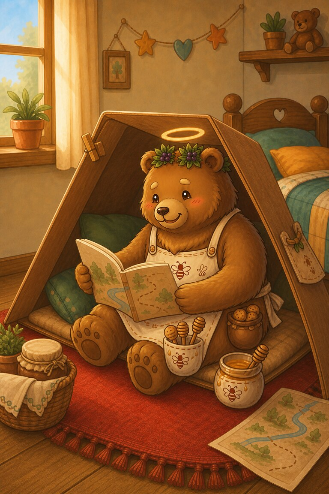

Page 1 of 5
Ted has a big box, a red rug, and a map. His den is by his bed.
A five-page den-building story for practising short-vowel words like box, rug, map, peg and cup.

Ted has a big box, a red rug, and a map. His den is by his bed.

The box is on top of the rug. The map is in a gap. Oh no!

A cup and a peg are in his bag. Ted can put the cup by the box. It can sit up!

Ted has a peg. The peg can pin the map to the den. Ted can sit on the rug.

Ted is in his den. His kit did a big job. It is fun to sit on the red rug!
A cup. On page 3, Ted takes a cup from his bag and puts it by the box.
SnackPack Sentences & Spelling has the full Reading Trail, longer stories, word packs and eight literacy games.
Next storyHen‑Berry’s Digraph Dash
Know a family or class who would enjoy it?